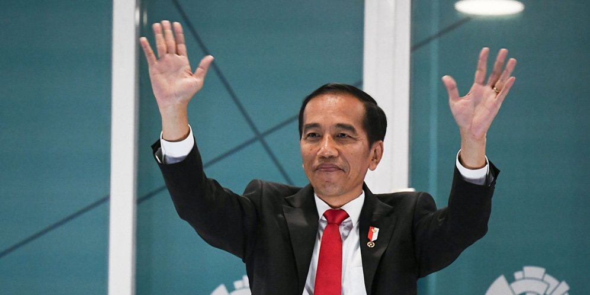
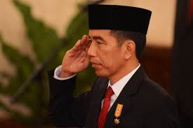

Welcome to the blog of Joko Widodo
|

Joko Widodo
Nama :Joko Widodo Lahir: 21 Juni 1961 (usia 58 tahun), Surakarta Pasangan: Iriana Joko Widodo (m. 1986) Jabatan saat ini: Presiden Indonesia sejak 2014 Anak: Gibran Rakabuming Raka, Kaesang Pangarep, Kahiyang Ayu Pendidikan: Universitas Gadjah Mada (1985), Universitas Gadjah Mada Jabatan sebelumnya: Gubernur Daerah Khusus Ibukota Jakarta (2012–2014), Wali kota Surakarta (2005–2012) |

|